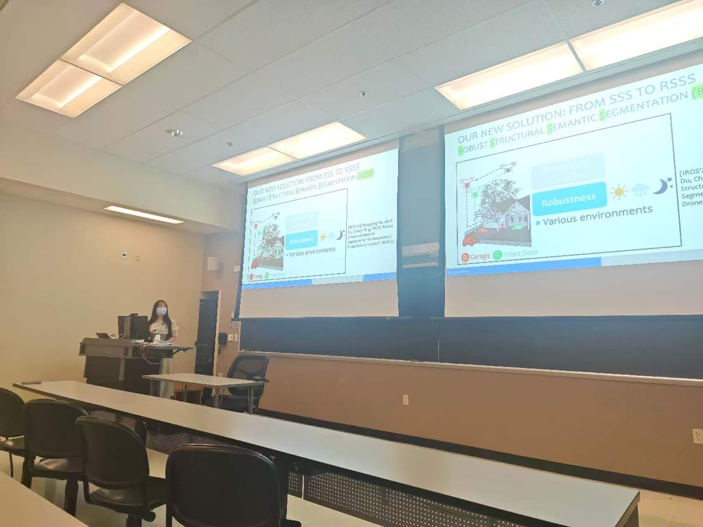
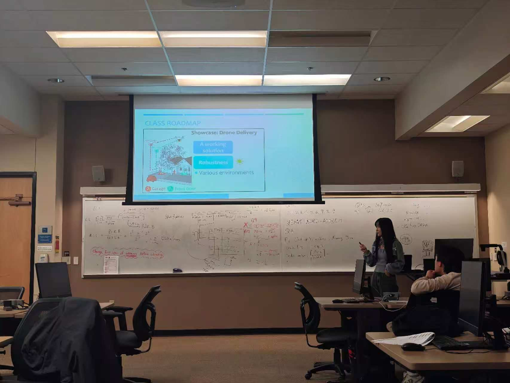
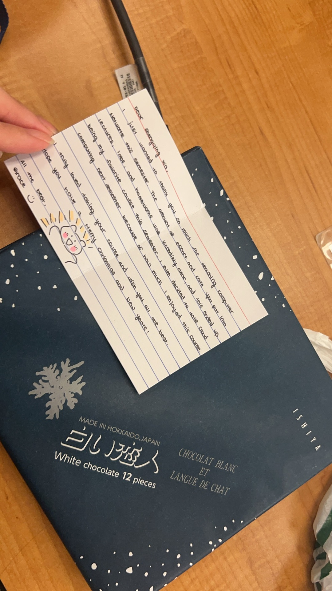
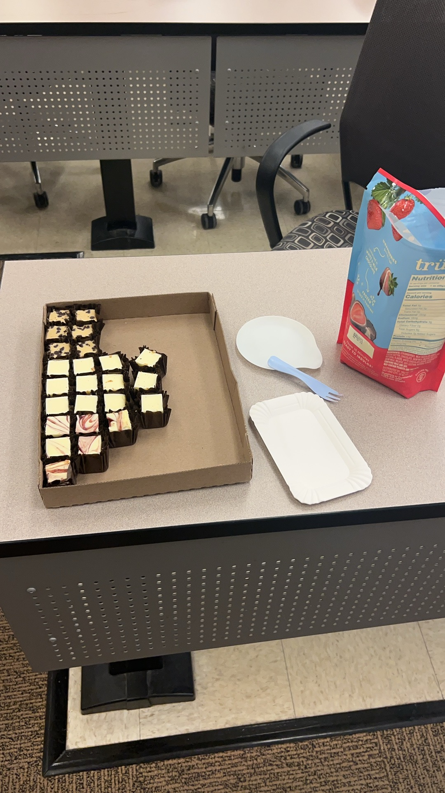

I aim to make computing concepts accessible by connecting technical foundations with concrete systems and real-world applications. I also use recurring student feedback to refine how I communicate, pace material, and design assignments.
In recognition of outstanding contributions to teaching and learning · Computer Science · April 22, 2026
View award certificate →A compact record of formal teaching and instructional roles.
Five rounds of anonymous feedback were collected throughout the course and used to refine lecture pacing, communication, and assignment design.
In Feedback 5, an additional 35% reported “Unchanged (fine with old assignments),” so roughly 84% either perceived improvement or already considered the assignments satisfactory.
Invited classroom talks connect my research in autonomous systems and computing with undergraduate learning.


Small moments outside formal instruction also help create a welcoming learning environment.

A personal reminder of the relationships that can grow through teaching and mentorship.

Sharing an end-of-semester moment with students.